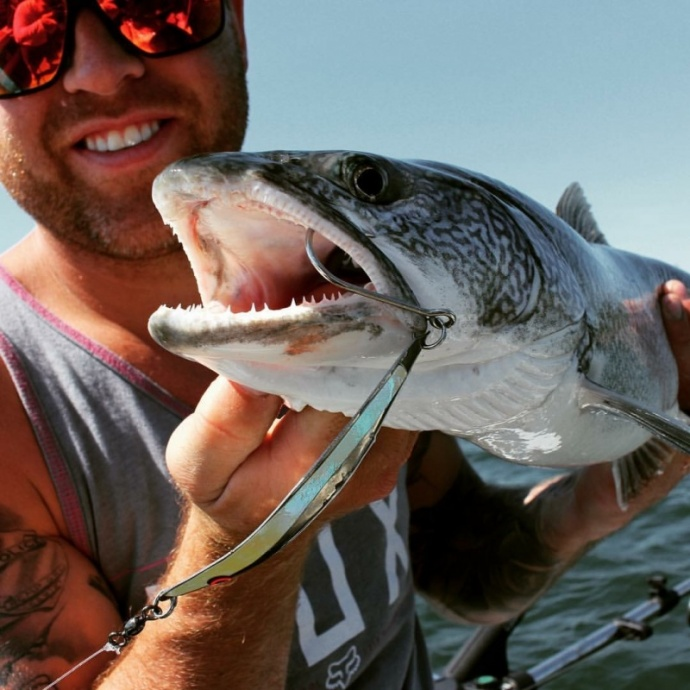

Skyscrapers springing from rocky outcrops at the edge of Great Slave
Lake. Sailboats gliding across Back Bay. Float planes soaring in the
midnight sun. Famous events, including a cultural festival in a snow
palace and a music festival on a sandy shore. A neighbourhood of
bright houseboats, all aglow beneath the Aurora. Mansions built next
to log cabins and teepees; and a whole bunch of friendly, offbeat
locals, having an extraordinary time in the wildest little city on
earth.
In the gallery, you will find a variety of outstanding products inside
including beautiful paintings, stone carvings, jewellery, buffalo
leather wallets & bags, birch bark baskets and more. We regularly post
photographs of new products to our Facebook page.
We are located in downtown Yellowknife in the Discovery Inn at 4701
Franklin Avenue, 1/2 block from 48th Street toward Old Town.
We are currently open from: Sunday Noon -5:00PM
Monday 11:00 AM-6:00PM Tuesday to Saturday 10:30 AM - 7:00
PM
Address: 4701 Franklin Avenue PO Box 1363 X1A 2P1 Yellowknife,
NT Canada Northwest Territories CA
The incredible spectacle of the Aurora Borealis, listed among the
planet's greatest natural wonders, will be unveiled for you on a night
you'll never forget.
Thanks to our prime spot below the auroral oval, Yellowknife is one of
the best places in the North, and the world, to view the Aurora
Borealis, also called the Northern Lights.
Welcome to the most mystical of evenings north of 60°. Here you'll
find the forever magic of the aurora chase - focused on photography, a
little bit of astronomy. With warm drinks, home baking, and infinite
patience, we're for all the magic of the Aurora chase, in an
intimately small group.
To track the probability of active aurora (periods of unsettled
geomagnetic field conditions) check out
Astronomy North's aurora forecast.
Dog sledding is still popular in the Northwest Territories, where a
good team is highly prized and well cared for. Curl up in a
comfortable cariole - an oak toboggan with canvas sides - traditional
winter transportation in the North. Meet the dogs - usually a pretty
friendly bunch - and their delightful puppies. Learn to harness a
team, and drive your own team with some beginner instruction. It's fun
and very good exercise. Dog team rides vary from half an hour, to half
a day or longer.
Beck's Kennels is a diversified professional dog sled kennel and tour
company that has been hosting visitors to Yellowknife for over 20
years. They specialize in dogsledding, outdoor adventures and aurora
viewing, and offers a wide variety of day trips, multi-day expedition
and package tours. Whether you need an activity for one afternoon or
to plan out an entire trip, Beck's Kennels is sure to have exactly
what you need!
Address: 124 Curry Drive P.O. Box 1858 X1A 2N2 Yellowknife, NT
Canada Northwest Territories CA
Yellowknife Sportfishing Adventures

Yellowknife Sportfishing Adventures is a professional fishing charter
company with a professional NWT fishing guide looking to help you
catch trophy fish. We hope to take our experience and help you catch
the trophy fish you dream of. We offer services from Yellowknife in
the summer/fall months(June-October). Which includes day trips and
overnight fishing/camping adventures.
Our goal is to provide a professional service at an affordable price.
You'll find friendly service, lots of laughs, smiles and memories that
will last a lifetime.
Give us a call and we will give you a trip of a life time so you can
check that box off your bucket list.
Aurora Emporium Art Gallery is a northern owned business
featuring original paintings, authentic northern stone and bone
carvings, buffalo leather wallets and bags, birch bark baskets,
souvenirs, and more. The gallery also provides teaching
services, commissioned works of art and corporate gifts.
Thanks to our prime spot below the auroral oval, Yellowknife is
one of the best places in the North, and the world, to view the
Aurora Borealis, also called the Northern Lights.
Yellowknife Sportfishing Adventures is a professional fishing
charter company with a professional NWT fishing guide looking to
help you catch trophy fish.